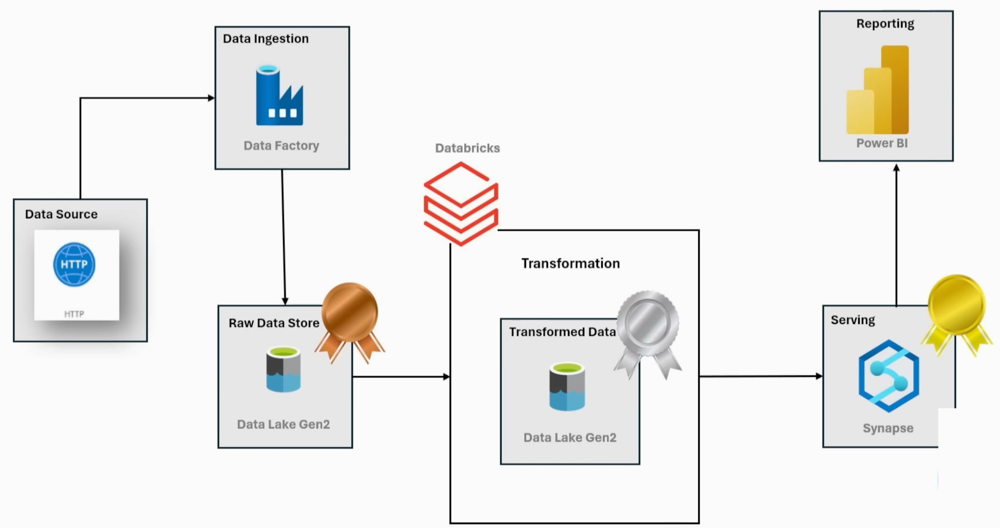

Developed an interactive Power BI dashboard for Recycling Management, providing key insights into waste collection, recycling rates, and community participation. The dashboard features real-time data updates, dynamic visualizations, and advanced DAX calculations to track total waste collected, analyze trends with a 7-day moving average, and identify top recycling locations, enabling data-driven decision-making for sustainability efforts.

In this project, I analyzed a global population dataset to uncover trends in population growth across continents. I performed data cleaning, handled missing values, and converted necessary columns for numerical analysis. Using descriptive statistics and grouping, I identified key insights into population trends over time. I visualized correlations with heatmaps and used bar charts to highlight growth patterns. Finally, I sorted and compared continents based on population size and growth rates.

Utilized SQL in Oracle to clean and analyze shipping data, ensuring data accuracy and consistency. Performed data transformations, aggregations, and optimizations to derive meaningful insights. This project improved data quality and enabled efficient decision-making for logistics and supply chain operations.

Designed and implemented a dynamic parameterized ETL pipeline in Azure for efficient data processing. Stored raw data in the Bronze layer, performed data cleaning and transformation using Databricks, and saved the refined data in the Silver layer. Leveraged Azure Synapse to create external tables, enabling seamless data analysis and reporting. This pipeline ensures scalability, automation, and optimized data management for analytical insights.